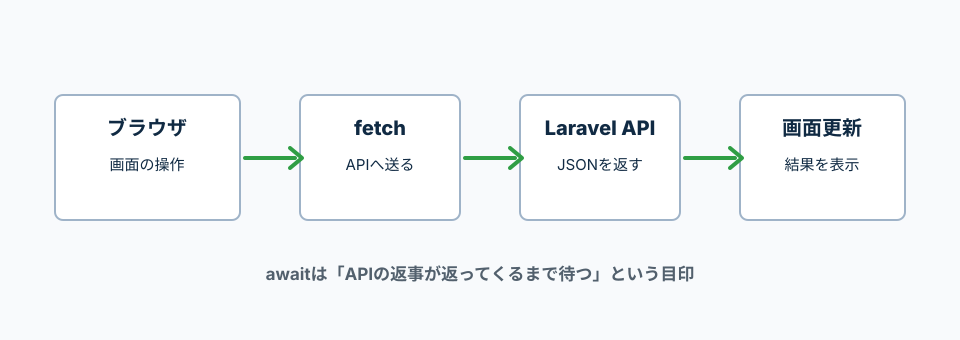

API通信、保存、取得で必要になるasync、await、fetchの基本。
Fetch APIはHTTPリクエストを送り、Promiseとして結果を返す。
async functionの中ではawaitを使って、非同期処理の完了を待てる。
fetchは、ブラウザからAPIへリクエストを送る処理。
Laravel APIから返ってきたJSONを受け取り、画面表示やstate更新に使う。

API通信はすぐに結果が返るとは限らない。
asyncとawaitを使うと、結果を待ってから次の処理を書ける。
async function loadMessage() {
const message = await Promise.resolve('読み込み完了');
console.log(message);
}
loadMessage();
async function
この関数の中でawaitを使えるようにする。
await
右側の処理が終わるまで待って、その結果を受け取る。
Promise.resolve(...)
非同期処理の結果が返ってくる例として書いている。
fetchでURLにアクセスする。
response.okがfalseなら、通信はできてもHTTPステータスとして失敗している。
async function getTodos() {
const response = await fetch('/api/todos', {
headers: {
Accept: 'application/json',
},
});
if (!response.ok) {
throw new Error('Todoの取得に失敗しました');
}
const todos = await response.json();
return todos;
}
fetch('/api/todos')
Laravelの/api/todosへHTTPリクエストを送る。
Accept: 'application/json'
APIに「JSONで返してください」と伝える。
response.ok
HTTPステータスが成功扱いかどうかを確認する。
response.json()
返ってきたJSONをJavaScriptで使える形に変換する。
methodにPOSTを指定し、bodyに送信データを入れる。
JSON.stringifyは、JavaScriptのオブジェクトをJSON文字列に変換する。
async function createTodo(title) {
const response = await fetch('/api/todos', {
method: 'POST',
headers: {
Accept: 'application/json',
'Content-Type': 'application/json',
},
body: JSON.stringify({
title: title,
}),
});
if (!response.ok) {
throw new Error('Todoの登録に失敗しました');
}
const todo = await response.json();
return todo;
}
method: 'POST'
新しく登録するためのHTTPメソッドを指定している。
Content-Type
送るデータがJSON形式だとAPIへ伝える。
JSON.stringify(...)
JavaScriptのオブジェクトをJSON文字列に変換して送る。
tryの中で失敗した処理は、catchで受け取れる。
API通信のエラーメッセージを画面に出す時によく使う。
async function loadTodos() {
try {
const todos = await getTodos();
console.log(todos);
} catch (error) {
console.error(error.message);
}
}
loadTodos();
try
失敗する可能性がある処理を書く場所。
catch (error)
tryの中でエラーが起きた時に、そのエラーを受け取る場所。
error.message
エラー内容のメッセージを取り出す。
formのsubmitで入力値を取り、createTodoに渡す。
awaitを使うので、イベント内の関数にもasyncを付ける。
const form = document.querySelector('.js-form');
const input = document.querySelector('.js-input');
const error = document.querySelector('.js-error');
form.addEventListener('submit', async (e) => {
e.preventDefault();
try {
const todo = await createTodo(input.value);
console.log(todo);
input.value = '';
error.textContent = '';
} catch (err) {
error.textContent = err.message;
}
});
async (e) =>
イベント処理の中でawaitを使うため、asyncを付けている。
await createTodo(input.value)
入力値をAPIへ送り、登録結果が返るまで待つ。
catch (err)
API登録に失敗した時、画面に出すエラーメッセージを受け取る。
Acceptは、JSONで返してほしいと伝える。
Content-Typeは、送るデータがJSONであると伝える。
const headers = {
Accept: 'application/json',
'Content-Type': 'application/json',
};